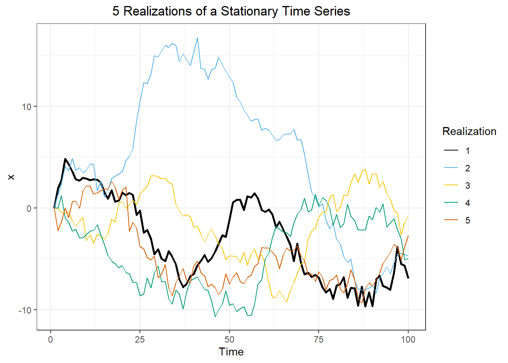

n <- 100
a <- .995
sigma <- 1
n_reps <- 5 # Max 9
df <- data.frame()
for(i in 1:n_reps){
x1 <- rep(0, n)
for(j in 2:n){
x1[j] = a * x1[j-1] + rnorm(1, mean = 0, sd = sigma)
}
temp <- data.frame(i = 1:length(x1),
x = x1,
rep = i)
df <- rbind(df, temp)
}
ggplot(df, aes(x = i, y = x, color = factor(rep))) +
geom_line() +
scale_color_okabeito(
palette = "full",
reverse = TRUE,
order = c(1,7,8,5,6,3,4,2,9),
aesthetics = "color"
) +
labs(title = paste0(n_reps," Realizations of a Stationary Time Series"),
x = "Time",
y = "x") +
theme_bw() +
theme(plot.title = element_text(hjust = 0.5)) +
guides(color = guide_legend(title = "Realization"))
# acf(df %>% filter(rep == 1) %>% dplyr::select(x), plot=FALSE, lag.max=5)